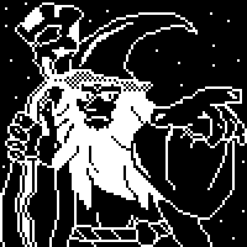

Hello gang. You can call me REDO or Jonah. I'm a guy who lives in Ohio and likes to make stuff sometimes. My biggest passion right now is game development, and I've been making games for about 1.5 years. I have some finished projects, and I hope you will like them.
Some of my favorite games are Spelunky, Animal Well, Celeste, Donkey Kong Country, Portal, Pogostuck, and Dark Souls.
In the future I'm looking forward to getting into more art forms. I love listening to music, and I'm trying to get into music production. Additionally, I've been working to improve my illustrations for my games. My progress with drawing is slow, but I'll post some stuff here in the future. You can look forward to different projects from me on this website.
In theory putting my work out there will help me to actually stay motivated and finish projects, hence the website and youtube channel. So please follow me on all my social media garbage, I will post stuff there eventually.

Thanks for reading about me. Have a good day!